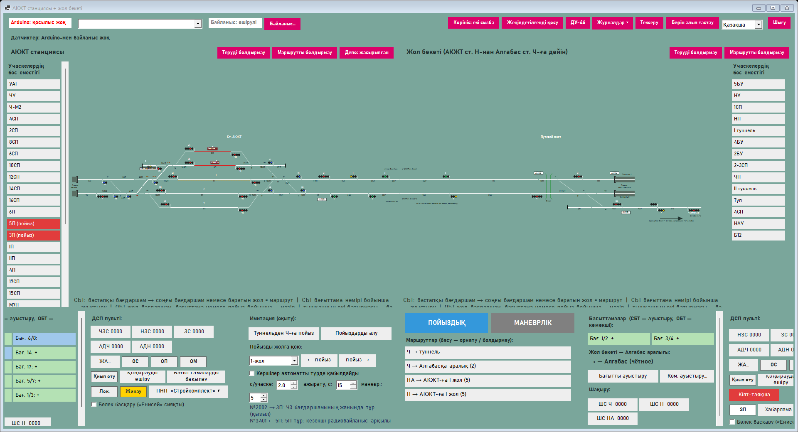
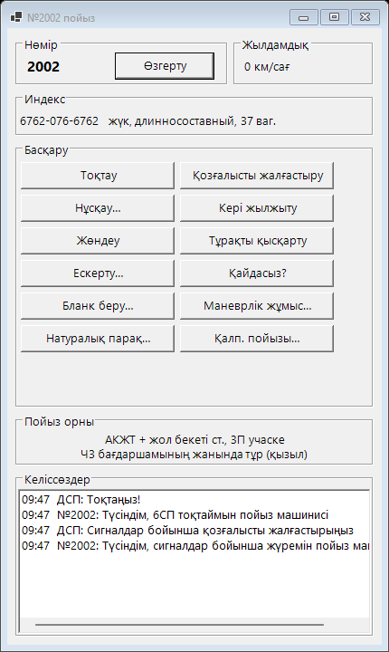
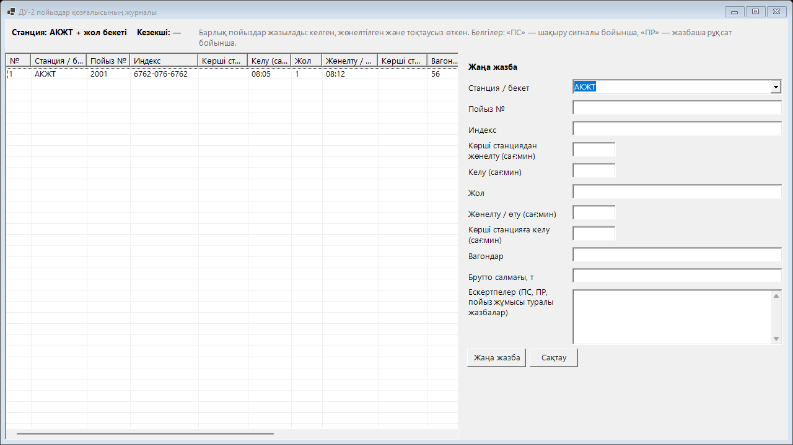
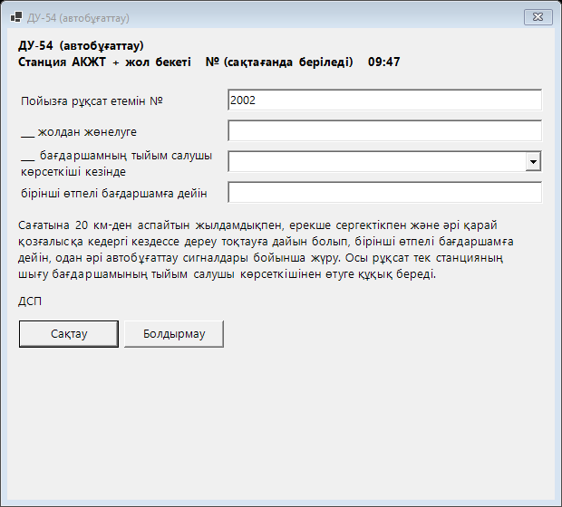
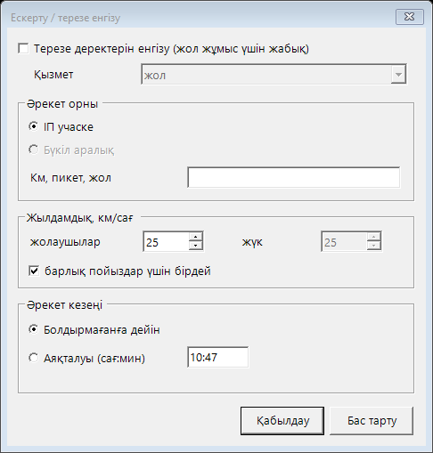
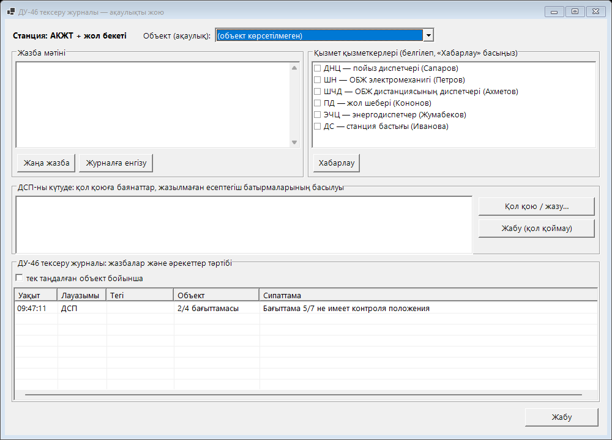
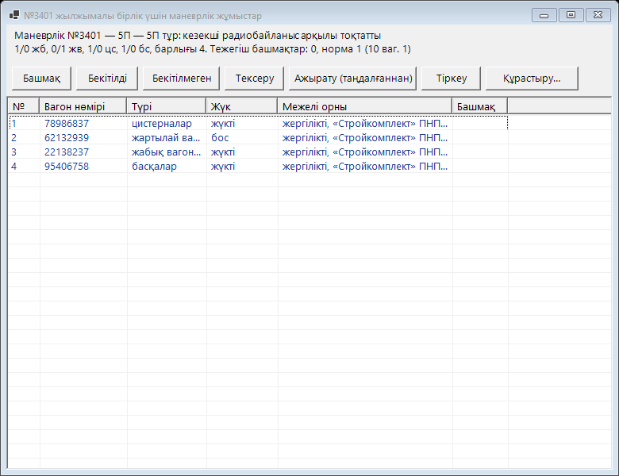
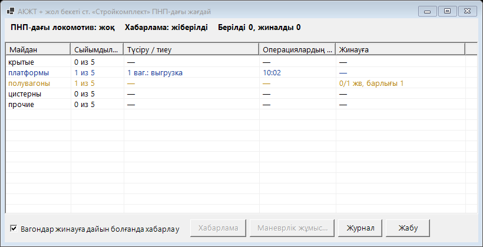

Студентке арналған нұсқаулық
Станция кезекшісінің (ДСП) тренажёры: АКЖТ станциясы, жол бекеті, Алгабас станциясы. Станция пультінде жұмыс істейтіндерге арналған.
1. Жұмысты бастау
- Өз станцияңыздың бағдарламасын іске қосыңыз:
АКЖТ\Station.exe(АКЖТ станциясы және жол бекеті) немесеАлгабас\Algabas.exe. Қайсысын — оқытушы айтады. - Байланыс… түймесін басып, оқытушы компьютерінің мекенжайын жазыңыз (ол оқытушы бағдарламасында көрсетілген, мысалы
192.168.8.27) және Қосу түймесін басыңыз. Мекенжай есте сақталады. - Пульттің үстінде сабақтың қараңғы жолағы пайда болады. Кіру түймесін басып, тізімнен өзіңізді таңдаңыз және құпиясөз болса, енгізіңіз. Тізімде жоқ болсаңыз — Мен тізімде жоқпын… (оқытушы тіркелуге рұқсат берсе).
- Оқытушы сабақты бастағанда жолақта оның атауы мен ойын уақыты көрінеді. Тапсырма түймесі — сабақта не істеу керек және қандай бұзушылықтар бар.
- Оқытушы уақытты үзілісте ұстап тұрғанда пульт командаларды қабылдамайды.
2. Станция терезесі

- Жоғарғы жолақ: макет күйі (Arduino), Байланыс…, Көрініс, Жеңілдетілгенді қосу (үлкен бағдаршамдар), ДУ-46, Журналдар ▾, Тексеру, Бәрін алып тастау, тіл, Шығу.
- Сызба: жолдар, бағыттамалар (сары нөмірлер), бағдаршамдар, пойыздар (көк белгілер «№2002 →»). Сызбаның астындағы жол тінтуір астындағы нысанды түсіндіреді.
- Учаскелердің бос еместігі — бүйірдегі кесте: қызыл — бос емес, сары — маршрутта тұйықталған.
- Төменгі бағандар: «Бағыттамалар», «ДСП пульті», «Имитация» (пойыз қою, пойыздарды алу, жылдамдық) және ПОЙЫЗДЫҚ / МАНЕВРЛІК ауыстырғышы бар маршруттар тізімі.
- Интерфейс режимі — жоғарыдағы Параметрлер батырмасы: Инженерлік (бәрі, макетті баптауға), Оқу (сабаққа: бос еместік тізімі мен баптау батырмаларынсыз), Жұмыс (Медеу станциясының ДСП АЖО-сы сияқты: ірі сызба, сағат, ДСП пульті жоғарыда жолақпен, ПОЙЫЗ / МАНЕВРЛІК төменде; имитациясыз және қолмен бос емес етусіз — макетпен жұмысқа), Павлодарлық (сұр сызба және астында «Енисей» батырмалы пульті: басталу және соңғы бағдаршам батырмалары, «+ № −» бағыттамалары, жол батырмалары — баратын жол немесе ИР). Сол терезеде белгілермен кез келген панельді көрсетуге немесе жасыруға болады; таңдау сақталады.
- ЖИ-көмекші — жоғарыдағы ЖИ батырмасы (терезе тек осы батырмамен ашылады). Қазақша немесе орысша сұраңыз: «маршрутты қалай беремін», «Н-нан 3 жолға маршрут» (жауап — қадаммен: не басу керек, қандай стрелкалар ауысады, қай учаскелер бос болуы керек, қазір беруге бола ма), «Н1 светофоры не үшін», «автоблокировка деген не». Тінтуірді светофорға апарып, «бұл не?» деп сұраңыз. Бағдарлама бас тартқанда (журналда қызыл жол) ЖИ терезесінде кеңес өзі шығады, ал батырмада «ЖИ ●» жанады.
3. Маршруттар мен сигналдар
- Маршрут орнату: ПОЙЫЗДЫҚ немесе МАНЕВРЛІК режимін таңдаңыз, бастапқы бағдаршамды тінтуірдің сол жағымен басыңыз, содан кейін соңғы бағдаршамды немесе баратын жолды басыңыз. Маршрут орнатылып жатқанда (бағыттамалар ауысады) жыпылықтайды, бағдаршам ашылғанда бірқалыпты жанады. Тізімдегі маршрутты басуға да болады.
- Теруді болдырмау — басқа бастапқы бағдаршамды басып қойсаңыз.
- Маршрутты болдырмау: бағдаршамды тінтуірдің оң жағымен басу → «Болдырмау…», немесе Маршрутты болдырмау түймесі (соңғы орнатылған). Бағдаршам ашылған болса, болдырмау уақыт ұстамымен жүреді — ОС (6 с), ОП (жақындау бос емес кездегі пойыздық, 3 мин), ОМ (маневрлік, 1 мин) шамдары жанады.
- Шақыру сигналы: кіру бағдаршамын оң жақпен басу → «Шақыру сигналы…». Қалыпты сигналды ашу мүмкін болмағанда қолданылады (мысалы, жалған бос емес). Әр басу ДУ-46 журналына жазылады (санауышы бар түйме).
- Аралық бағыты: «Бағыттамалар» бағанындағы «Бағытты ауыстыру»; аралық жалған бос емес болса — «Көм. ауыстыру…» (ВСН, санауышы бар түйме). Көрші станция келісуі керек.
4. Бағыттамалар
- Ауыстыру: сызбадағы бағыттама нөмірін сол жақпен басу немесе «Бағыттамалар» бағанындағы түйме. Маршруттағы немесе бос емес учаскедегі бағыттама ауыспайды.
- Көмекші ауыстыру (ВК) — тек бағыттамалық учаске жалған бос емес болғанда: бағыттаманы оң жақпен басу → «Көмекші ауыстыру…». ДУ-46-ға жазыңыз.
- Бағыттаманы оң жақпен басу: қызыл қалпақша (пульттен ауыспайды), «Бағыттаманы басқару» (курбель жапқышы, курбельмен ауыстыру, салма мен құлып, типтік қапсырма), «Орталықтандырудан ажырату…», макетке қою, «Ақпарат…» (нақты орналасуы).
- Нөмір жанындағы белгілер: К — қалпақша, З — жапқыш, Л — құлып / қапсырма, В — ажыратылған, М — макетте. «ВЗРЕЗ» — бағыттаманы пойыз қиып өтті.
- Барлық бағыттамалардың орналасуы: «Бағыттамаларды бақылау» түймесін ұстап тұрыңыз немесе сызбада тінтуірдің екі түймесін де басыңыз: плюс — жасыл, минус — сары.
5. ДСП пульті
| Түйме / шам | Не істейді |
|---|---|
| ЧЗС, НЗС, ЗС | Жұп, тақ, барлық бағыттамаларды тұйықтау. Сол жақпен — басу, оң жақпен — жіберу. Санауышы бар түйме. |
| АДЧ, АДН | Бас жол бойынша автоәрекет: пойыз өткеннен кейін маршрут қайта орнатылады. Санауыш (пломбаны үзу). |
| ИР… | Пойыздан кейін ажырамаған секцияларды жасанды ажырату. Ұстам, санауыш. |
| ОС, ОП, ОМ | Маршрутты болдырмау ұстамының шамдары (секундтармен). |
| Взрез, Қоңырауды өшіру | Бағыттаманы қиып өту шамы және қоңырауды өшіру. |
| Кілт-таяқша | Алу, машинистке беру, қайтарып алу, салу. Кілт алынған кезде аралық бағыты өзгермейді. |
| ЗП, Хабарлама, Хаб. болдырмау, Жабу | Жол бекетіндегі өткел: ЗП шамы (ақ — ашық, жыпылықтайды — жабылуда, қызыл — жабық). |
| Лок., Жинау, ПНП ▾ | Ортақ пайдаланылмайтын жол: ПНП-дағы локомотив, жинауға дайын вагондар, ПНП мәзірі (11-бөлімді қараңыз). |
| Бөлек басқару | «Енисей» пультіндегідей: алдымен бағыттамалар, содан кейін сигнал. |
6. Пойыздар және радиобайланыс
Тінтуірді пойызға апарыңыз — кеңесте нөмірі, санаты, қайда жүретіні және неге тұрғаны көрінеді. Пойызды оң жақпен басу:
- Нөмір және индекс… — нөмір (жұп — жұп бағытта →, тақ — тақ бағытта ←), индекс, санат, ұзын құрамды, ауыр салмақты, габаритсіз.
- Радиобайланыс арқылы шақыру… — «№… пойыз» терезесі (төменде).
- Пойызға ескерту…, Бланк беру…, Маневрлік жұмыс…, Натуралық парақ…, Қалпына келтіру пойызын шақыру… (рельстен шыққанда).
- Кері бұру, маневрлік / пойыздық ету.

| Команда | Машинист не істейді |
|---|---|
| Тоқтау / Қозғалысты жалғастыру | Тоқтайды және «Жалғастыру» командасына дейін тұрады. |
| Нұсқау… | Тіркелетін бұйрық: бір тыйым салушы бағдаршамнан өту. Бұйрық ДУ-58-ге өзі жазылады. Алдын ала маршрут дайындалғанына және бағыттамалар құлыпталғанына көз жеткізіңіз. |
| Кері жылжыту | Құрамды бір учаске кері жылжытып, нұсқау күтеді. |
| Жөндеу | Қозғалтқыш ақауы кезінде бригада локомотивті жөндейді (4–8 мин) және баяндайды. |
| Тұрақты қысқарту | Жолаушылар пойызы кесте уақытынан бұрын кете алады. |
| Ескерту… | Осы пойызға жылдамдық және машинистке қолданыстағы ескертулерді хабарлау. |
| Қайдасыз? | Машинист станцияны, учаскені және неге тұрғанын хабарлайды. |
| Маневрлік жұмыс…, Натуралық парақ…, Қалп. пойызы… | 11 және 12 бөлімдерді қараңыз. |
Макеттегі нақты пойыздың нөмірі жоқ: бос емес учаскені оң жақпен басу → «Макеттегі пойыз нөмірі…». Нөмір учаскелер бойынша пойыздың артынан өзі ауысады. Онымен радиобайланыс пен бланкілер тек жазылады — пойызды қолмен жүргізеді.
7. Журналдар
Журналдар ▾ түймесі: ДУ-2, ДУ-47, ДУ-58, ДУ-60, бланкілер, радиобайланыс, ескертулер, ДУ-46. Әр журналда сол жақта — жазбалар, оң жақта — пішін. Жаңа жазба → толтыру → Сақтау. Түзету үшін — жазбаны таңдап, өзгертіп, «Сақтау» (түзету уақытпен белгіленеді). Жазбаларды жоюға болмайды.

| Журнал | Не жазу керек |
|---|---|
| ДУ-2 — пойыздар қозғалысы | Әр пойыз: нөмірі, индексі, жолы, келуі, жөнелтілуі (немесе өтуі), «ПС» (шақыру сигналы бойынша), «ПР» (жазбаша рұқсат бойынша) белгілері. Сабақ соңында бағдарлама нақты деректермен салыстырады: нөмір, жол, уақыт ±2 мин. |
| ДУ-47 — телефонограммалар | Көрші станцияға шығыс телефонограммалар. «Сақтау / беру» — көрші кіріс телефонограммамен жауап береді (пойызға келісім, аралық бос / бос емес). Мәтін дайындамалары — тізімде. |
| ДУ-58 — өкімдер | Пойыз диспетчерінің (ДНЦ) бұйрықтары — нөмірі, уақыты, мәтіні. ДНЦ бұйрығы қалқымалы терезеде келеді — оны жазыңыз. Радиобайланыс бойынша «Нұсқау» бұйрығыңыз өзі жазылады. |
| ДУ-60 — ескертулер | Берілген әр ескерту: орны, жылдамдығы, басталуы, аяқталуы. «Берілген ескерту бойынша…» пішінді толтырады, «Белгіленгенді болдырмау» — болдырмау. |
| ДУ-46 — тексеру | Ақаулықтар және санауышы бар түймелерді басу (10-бөлімді қараңыз). |
8. Бланкілер
Журналдар ▾ → «Бланкілер…» (немесе пойызды оң жақпен басу → «Бланк беру…»): түрін таңдау → Бланк жасау → толтыру → «Сақтау» → пойызды таңдау → Машинистке беру. Берілген бланкіні өзгертуге болмайды.

| Бланк | Қашан | Пойыз не істейді |
|---|---|---|
| ДУ-50 жол жазбасы | Телефон байланыс құралдары. Алдымен — көршінің келісімі (ДУ-47) | Жабық шығу бағдаршамынан өтеді, аралықта автобұғаттау сигналдарына қарамай жүреді |
| ДУ-52 | Жартылай автобұғаттау, шығу бағдаршамы ашылмайды | Жабық шығу бағдаршамынан өтеді |
| ДУ-54 | Автобұғаттау, шығу бағдаршамы ашылмайды | Жабық шығу бағдаршамынан өтеді, одан әрі автобұғаттау сигналдары бойынша |
| ДУ-55, ДУ-56 | Барлық сигнал беру және байланыс құралдары үзілген | ДУ-56 — ДУ-50 сияқты; ДУ-55 — көршіге хабарлама |
| ДУ-61 ескерту | Жолда ескертулер қолданыста | Машинист ескертілді («Қолданыстағы ескертулерді жазу» түймесі) |
| ДУ-64 ерекше жағдайлар | Шаруашылық, қалпына келтіру пойыздары, көмек | Жабық шығу бағдаршамынан өтеді, аралықта автобұғаттау сигналдарына қарамай жүреді |
9. Ескертулер және «терезелер»
Учаскені немесе аралықты оң жақпен басу → «Ескерту / терезе…»: учаске немесе бүкіл аралық, километр, жолаушылар және жүк пойыздарының жылдамдығы, болдырмағанға дейін немесе уақытқа дейін. «Терезе деректерін енгізу» белгісі — жол жұмыс үшін жабық (жол, СОБ, энергетика қызметі).

- Сызбада ескерту — учаске астындағы қызғылт сары үзік сызық, «терезе» — қызыл айқыш.
- Ескерту астында пойыз баяу жүреді. «Терезеге» маршрут орнатылмайды және пойыз кірмейді (шаруашылық және қалпына келтіру пойыздарынан басқа).
- Берілген ескертуді ДУ-60-қа жазыңыз. Осы учаскемен жүретін пойыздардың машинистеріне ДУ-61 беріңіз (немесе радиобайланыс арқылы «Ескерту…» хабарлаңыз).
- Аралықтағы «терезені» пойыз диспетчері бұйрықпен береді — бұйрық нөмірін ДУ-58-ге жазыңыз (болдырмағаннан кейін ашу туралы бұйрықты да).
- Болдырмау: учаскені оң жақпен басу → «Болдырмау: …» немесе «Журналдар ▾» → «Ескертулер және «терезелер»…».
10. Ақаулықтар (ДУ-46 журналы)
Ақаулықтарды оқытушы береді. «Ақаулық» деген жазу жоқ — кезекші көретінді көресіз: бақылаусыз бағыттама, ашылмайтын бағдаршам, пойызсыз бос емес учаске. Пойыз ақауы туралы машинист хабарлайды.
- Нысанды оң жақпен басу → «Ақаулық… (ДУ-46 журналы)» немесе ДУ-46 түймесі.
- Жазбаны жазыңыз → Журналға енгізу.
- Қызметкерлерді белгілеңіз (ШН — электромеханик, ДНЦ — диспетчер, рельстен шыққанда ПД — жол шебері) → Хабарлау.
- Қызметкер келеді (2–5 ойын минуты) және баяндама жібереді. Қол қою — ақаулық жойылды.

11. Маневрлік жұмыс және ПНП
Жүк пойызы вагондар тасиды (натуралық парақ). Басында, локомотивтің артында — станцияның ортақ пайдаланылмайтын жолына (ПНП) арналған жергілікті вагондар: АКЖТ-да — «Стройкомплект» (6-тұйық), Алгабаста — «Мұнай базасы» (М6Т тұйығы).

- Пойызды қабылдап, тоқтатыңыз (радиобайланыс «Тоқтау»). Пойызды оң жақпен басу → «Тарату, маневрлік жұмыс…» — пойыз маневрлік құрамға айналады.
- Бірінші транзиттік вагонды таңдаңыз → Ажырату. Транзиттік вагондар жолда локомотивсіз қалады («ваг. N» белгісі).
- Оларды бірден бекітіңіз: вагондарды таңдау → Башмақ. Норма — 10 вагонға 1 тежегіш башмақ. Бекітілді деп баяндаңыз. 2 минут норма бойынша бекітілмесе — сыни оқиға.
- Пульттегі ПНП ▾ мәзірі → «Маневрлік жұмыс туралы хабарлама».
- ПНП тұйығына маневрлік маршрут орнатыңыз. Локомотив кіргенде — «ПНП ▾» → «ПНП-дағы маневрлік жұмыс…»: «Беруге» вагондарын белгілеңіз → Маневрлік жұмысты орындау.
- Вагондар жүк майдандарына қойылады (вагон түрі бойынша 5 майдан, әрқайсысында 5 вагон). Құрастырушы «Станцияға шығуға рұқсат етесіз бе?» деп сұрайды — «Қол қою» = иә.
- Тиеу / түсіру уақыт бойынша жүреді. Сары «Жинау» шамы жанғанда — қайта кіру, «Жинауға» → орындау.
- Жолдағы вагондарға оралып, тығыз жақындаңыз (локомотив «тіркеуге болады» жазуымен тоқтайды) — башмақтарды алыңыз (Башмақ) және Тіркеу түймесін басыңыз.
- Құрастыру… — нөмір мен индекс, құрам қайтадан пойыз болады. Тексеру — ПТО тексерушісі 3–6 минутта тексереді. Пойызды жөнелтіңіз.

12. Рельстен шығу және қалпына келтіру пойызы
- Машинист рельстен шығу туралы хабарлайды. ДУ-46-ға жазыңыз, ДНЦ мен ПД-ға хабарлаңыз.
- ПД келіп, қалпына келтіру пойызы керек екенін хабарлайды. Рельстен шыққан пойызды оң жақпен басу → «Қалпына келтіру пойызын шақыру…» → «Шақыру».
- Бірнеше минуттан кейін №8002 пойыз станцияға жақындауда пайда болады. Оны қабылдап, маршруттармен рельстен шыққан жерге тығыз жеткізіңіз.
- Қалпына келтіру пойызының бастығы (НВП) келгені туралы, содан кейін рельстен шығу жойылғаны туралы баяндайды: пойызға жылдамдық 40 км/сағ аспасын.
- Пойызға 40 км/сағ ескерту беріңіз (радиобайланыс → «Ескерту…»), содан кейін жөнелтіңіз.
13. Кесте
Кестесі бар сабақта пойыздар нөмірлерімен өздері пайда болады. Сабақ жолағындағы Кесте түймесі — пойыздар кестесі, нақты деректер, басып шығару. Пойыздарды кесте бойынша жолдарға қабылдаңыз. Жолаушылар пойыздары уақытынан бұрын кетпейді. Станция кінәсінен жөнелтудің 5 минуттан артық кешігуі — сыни оқиға.
14. Бағалау
100 балл минус айыппұлдар. Сынақ — балл сабақ шегінен кем емес және сыни оқиғалар рұқсат етілгеннен көп емес. Орындалмаған тапсырма (қабылдау / жөнелту) — әр пойызға −10.
| Бұзушылық | Айыппұл |
|---|---|
| Пойыз жабық кіру бағдаршамында 3 минуттан артық тұр | сыни, −20 |
| Бағыттаманы пойыз қиып өтті | сыни, −20 |
| Кесте бойынша жөнелту 5 минуттан артық кешікті | сыни, −20 |
| Локомотивсіз вагондар 2 минут норма бойынша бекітілмеген | сыни, −20 |
| ПНП-да екінші локомотив | сыни, −20 |
| Мүмкін емес маршрут (әрекет) | −2 (барлығы −20-дан аспайды) |
| Жақындауда пойыз болғанда маршрутты болдырмау | −5 (−20-дан аспайды) |
| Ақаулық ДУ-46-ға жазылмаған / ШН / ДНЦ / ПД-ға хабарланбаған | әрқайсысына −5 |
| Санауышы бар түйме 10 минут ішінде ДУ-46-ға жазылмаған | −5 (−20-дан аспайды) |
| ДУ-2 нақты деректерге сәйкес емес / ДНЦ бұйрығы ДУ-58-де жоқ / ескерту ДУ-60-та жоқ | −2 (журнал бойынша −10-нан аспайды) |
| ДУ-50 көршінің келісімінсіз берілді (ДУ-47) | −5 |
| Бланк басқа пойызға берілді | −2 |
| Пойыз ДУ-61 / радиобайланыссыз ескерту астына кірді | −5 |
| Бағыттамалар тұйықталмағанда бұйрық немесе бланк бойынша өткізу | −5 |
| Башмақ жетіспегенде «бекітілді» баяндамасы; башмақпен қозғалу; ПТО тексеруінсіз пойыз | −5 |
| ПНП-ға пойызбен кіру; хабарламасыз ПНП-ға беру | −5 |
| Маневр жоспары (беру / жинау / жергілікті вагондарды жөнелту) орындалмаған | вагонға −2 (−20-дан аспайды) |
| Рельстен шыққаннан кейін пойыз 40 км/сағ ескертусіз жөнелтілді | −5 |
15. Жиі қойылатын сұрақтар
- Маршрут орнатылмайды.
- Терезенің төменгі жолын және журналды оқыңыз: себебі сонда (учаске бос емес, бағыттама ауыспайды, аралық бағыты, «терезе»…).
- Пойыз тұр.
- Тінтуірді оған апарыңыз — кеңесте себебі көрінеді («бағдаршам жанында тұр…», «бақылаусыз бағыттама», «алда терезе», «радиобайланыс арқылы тоқтатылды»).
- Сабақ жолағы жоқ.
- Оқытушымен байланыс жоқ: «Байланыс…» мен мекенжайды тексеріңіз.
- Пульт жауап бермейді.
- Уақыт үзілісте немесе басқаруды оқытушы алды (жолақта жазылады).